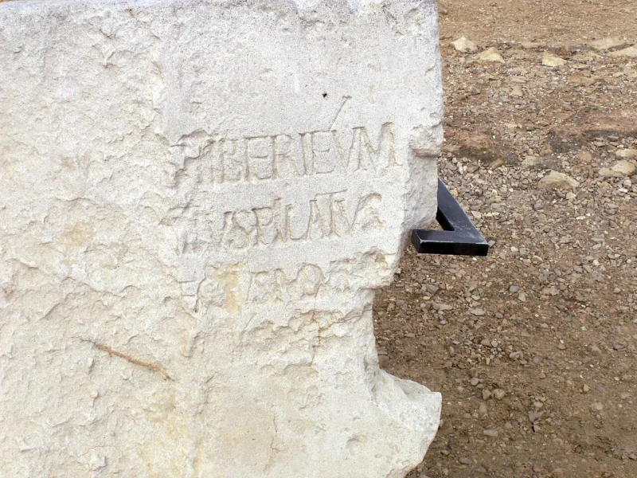
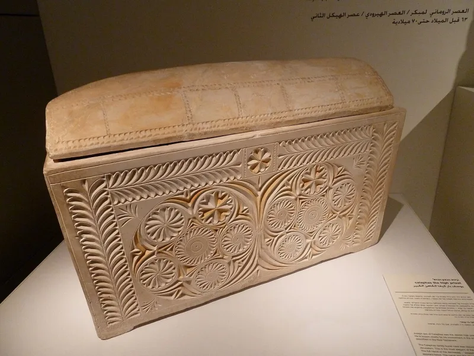

This Christian argument does not hold up. Drop it.
Most entries on this list are about losing an argument. This one is not.
This is the specific claim that sat underneath a thousand years of killing.
The Rhineland massacres of 1096. The blood libel invented at Norwich in 1144 and repeated for centuries.
Easter pogroms. Expulsions.
And a vocabulary that was still in use in the twentieth century.
A Roman governor ordered the execution and Roman soldiers carried it out. The New Testament spreads the responsibility very differently — and in John 10:18 Jesus says plainly that nobody takes his life from him.
If any version of this phrase is in your vocabulary, take it out. Not softened.
Out.
Nothing. This is one to never say — not one to say better.


The passion stories themselves fed this charge; Christians cannot blame bad readers alone.
There is no counter-argument to put at its strongest here. There is only an observation your Jewish friend will rightly press.
The passion narratives themselves supplied the raw material, above all Matthew 27:25 and John's repeated use of 'the Jews.' Christian theology cannot hand the problem off to bad readers. A Christian who uses this framing has not merely made a tactical mistake. He has contradicted his own scriptures, and stepped into the persecutors' line.
Never say it, in any form; the move here is confession, not debate.
Do not use it, ever, in any form. That includes the softened versions, like 'your ancestors rejected him.'
The Christian confession is that my sin required the cross. Every communion service says so. If the subject comes up, the Christian move is confession: the church's guilt for the deicide charge, and everything it harvested. Then, only if you are invited, the history of who actually ordered the execution.